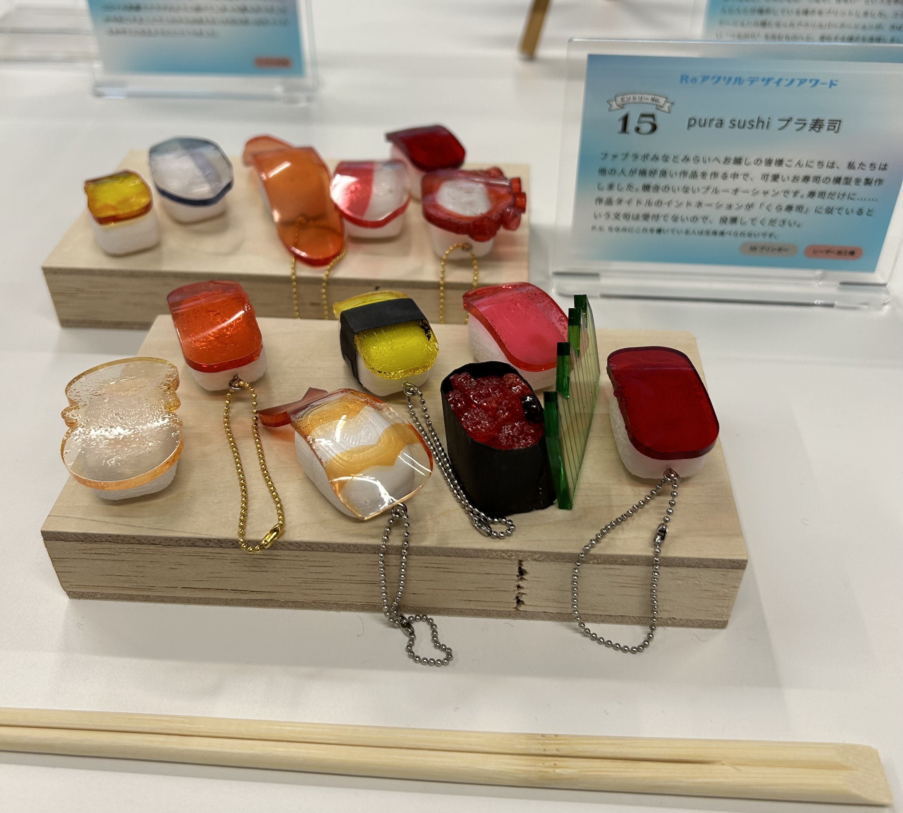

【進展】ぷら寿司、アクリルアワードに参加！？
こんにちはreiです!
今回はここまで作成してきたぷら寿司を神奈川大学みなとみらいキャンパスで行われた、「REアクリルデザインアワード」（通称:アクリルアワード）に出展させていただいたので、その様子を書いていきたいと思います！
詳細はこちら
アクリルアワードとは
アクリルアワードとは、上のリンク先にも書いてある通り、新型コロナウイルスが5類に移行し、
以前の日常生活に戻りつつある今、コロナ禍において教室や食堂などで活躍したパーテーションのアクリル板を再利用した作品を作り、
その中から投票制でグランプリが決まるという大会であります!
僕たちの作品
このぷら寿司のプロジェクトはタイヨー君(
タイヨー君のホームページ)と共同で作業しており、二人で協力して作品を作り上げました。
僕たちが製作した作品はこちら！

マグロやタマゴだけではなく、エビやタコ、イクラなど様々なお寿司にチェーンを付け、キーホルダーとして提出させていただきました！
ぷら寿司の説明文
頑張って説明文書いたからミテネ。
【ラブ3チャン】アクリルアワード、テレビ神奈川に取材される⁉
このアクリルアワードの様子がテレビ神奈川（TVK）のニュースリンクで放映されました!
テレビ神奈川公式サイト（リンクの期限が切れてる可能性があります）
グランプリ決定
多くの人が投票してくれたREアクリルデザインアワードの結果は？？
残念ながらぷら寿司は受賞ならず。。。
グランプリは同じ神奈川大学に所属するカワセミさんの作品でした。
アクリルアワードの感想
残念ながらグランプリを受賞することはできませんでしたが、毎日授業がないときは学校に来てファブラボで製作する時間がとても楽しく良い思い出になりました。
来年もアワードがあれば参加したいですね！